4.3 Hedonic analysis (M9b)
4.3.1 Method description
The hedonic evaluation test involves asking consumers to :
- to rate their preference from 1 (I dislike extremely) to 9 (I like very much) for three to four sensory attributes specific to the test product. The overall preference is ascertained at the beginning of the questionnaire in order not to influence the consumer and be closer to typical conditions of consumption.
- give additional information such as sex, age and organic consumption frequency in order to characterise the population sample.
- give additional sensory descriptors to describe products are asked after evaluation of each product.
4.3.1.1 Determine differences of appreciation for each samples
Regarding samples, the objectives of the hedonic tests are to
- determine differences of appreciation for a given attribute between the set of samples bsed on the note given by the juges and
- determine appreciation of samples based on descriptors given by the juges
Differences of sample regarding the note given by the juges.
The data distribution determines the type of tests that should be used to analyze the data set.
- If the distribution is Normal, one-way analysis of variance (ANOVA) can be performed:
\(Y_{ij} = \alpha_i + \beta_j + \varepsilon_{ij}; \quad \varepsilon_{ijkl} \sim \mathcal{N} (0,\sigma^2)\)
with \(Y_{ij}\) the note from 1 to 9 given by a person to a sample, \(\alpha_i\) the person (i.e. assessor) that taste the sample, \(\beta_j\) the germplasm tasted, \(\varepsilon_{ijkl}\) the residuals.
Then, multiple comparison of mean on germplasm are performed. The aim is to obtain a final ranking based on consumers’ preferences.
- If the data set doesn’t follow a Normal distribution, a Friedman test on the rank should be used to indicate if the varieties are perceived differently by assessors.
Appreciation of sample regarding the descriptors given by the juges.
To do so, Correspondance Analysis (CA) is done on the data with descriptors.
4.3.1.2 Juges profiles
Another objective of the analysis is to determine juges profiles based on the note given and the additional information such as sex, age and organic consumption frequency, etc.
It is done with a Hierarchical Clustering on Principle Components (HCPC) that can be implement to identify groups of juges preferences after a Principal Component Analysis (PCA).
4.3.2 Steps with PPBstats
For hedonic analysis, you can follow these steps (Figure 4.2):
- Format the data with
format_data_PPBstats() - Describe the data with
plot() - Run the model with
model_hedonic() - Check model outputs with graphs to know if you can continue the analysis with
check_model() - Get mean comparisons on the note given by the juges for each factor with
mean_comparisons()and vizualise it withplot() - Format data for CA and HCPC analysis with
biplot_data()and visualise it withplot()
4.3.3 Format the data
data(data_hedonic)
head(data_hedonic)## sample germplasm location juges note descriptors Age Sexe
## 1 832 germ-1 loc-1 1 7 douce; juteuse 21 F
## 2 412 germ-1 loc-1 1 8 juteuse; sucree 21 F
## 3 465 germ-2 loc-1 1 5 acide 21 F
## 4 108 germ-3 loc-1 1 7 sucree 21 F
## 5 967 germ-4 loc-1 1 8 sucree 21 F
## 6 619 germ-5 loc-1 1 6 peau epaisse; juteuse 21 F
## Bio.Non.Bio Circuit Departement
## 1 1 1;2;3 30
## 2 1 1;2;3 30
## 3 1 1;2;3 30
## 4 1 1;2;3 30
## 5 1 1;2;3 30
## 6 1 1;2;3 30The data frame has the following columns: sample, germplasm, location, juges, note, descriptors. The descriptors must be separated by “;”. Any other column can be added as supplementary variables.
Then, you must format your data with format_data_PPBstats() and type = "data_organo_hedonic".
Argument threshold can be set in order to keep only descriptors that have been cited several time.
For exemple with threshold = 2, only descriptors cited at least twice are kept.
data_hedonic = format_data_PPBstats(data_hedonic, type = "data_organo_hedonic", threshold = 2)## Warning in format_data_PPBstats.data_organo_hedonic(data, threshold): The following samples are not kept because they have been already tasted (i.e. germplasm and location combinaison already exist):
## sample 412 by juge 1 on row 2## Warning in format_data_PPBstats.data_organo_hedonic(data, threshold): The
## following row in data have been remove because there are no descriptors :9## The following descriptors have been remove because there were less or equal to 2 occurences : aciduee, acidulee, classique, classique, classique , cremeuse, croquante, epicee, equilibree, farineuse, ferme, fondante, legere, molle, parfumee, salee, sucree## data has been formated for PPBstats functions.names(data_hedonic)## [1] "data" "var_sup" "descriptors"data_hedonic is a list of four elements :
datathe data formated to run the anova and the multivariate analysis regarding- sample
head(data_hedonic$data$data_sample)## sample germplasm location juges note Age Sexe Bio.Non.Bio Circuit
## 1 loc-1:germ-1 germ-1 loc-1 1 7 21 F 1 1;2;3
## 2 loc-1:germ-2 germ-2 loc-1 1 5 21 F 1 1;2;3
## 3 loc-1:germ-3 germ-3 loc-1 1 7 21 F 1 1;2;3
## 4 loc-1:germ-4 germ-4 loc-1 1 8 21 F 1 1;2;3
## 5 loc-1:germ-5 germ-5 loc-1 1 6 21 F 1 1;2;3
## 6 loc-1:germ-6 germ-6 loc-1 2 7 30 F 1
## Departement acide acidulee charnue douce douce equilibree
## 1 30 0.00000000 0 0 0.03703704 0 0
## 2 30 0.02941176 0 0 0.00000000 0 0
## 3 30 0.00000000 0 0 0.00000000 0 0
## 4 30 0.00000000 0 0 0.00000000 0 0
## 5 30 0.00000000 0 0 0.00000000 0 0
## 6 11 0.00000000 0 0 0.00000000 0 0
## farineuse ferme fraiche fruitee goutue goutue juteuse juteuse neutre
## 1 0 0 0 0 0 0 0 0.3333333 0
## 2 0 0 0 0 0 0 0 0.0000000 0
## 3 0 0 0 0 0 0 0 0.0000000 0
## 4 0 0 0 0 0 0 0 0.0000000 0
## 5 0 0 0 0 0 0 0 0.3333333 0
## 6 0 0 0 0 0 0 0 0.0000000 0
## parfumee peau epaisse peau epaisse sucree sucree tendre
## 1 0 0 0.00000000 0.00000000 0 0
## 2 0 0 0.00000000 0.00000000 0 0
## 3 0 0 0.00000000 0.02272727 0 0
## 4 0 0 0.00000000 0.02272727 0 0
## 5 0 0 0.02040816 0.00000000 0 0
## 6 0 0 0.00000000 0.02272727 0 0- sample_mean which gathers for each sample a mean for note and descriptorshead(data_hedonic$data$data_sample_mean)## sample germplasm location note acide acidulee
## 1 loc-1:germ-1 germ-1 loc-1 6.125000 0.003586801 0.001742160
## 2 loc-1:germ-2 germ-2 loc-1 6.050000 0.004304161 0.005226481
## 3 loc-1:germ-3 germ-3 loc-1 6.769231 0.002205882 0.001785714
## 4 loc-1:germ-4 germ-4 loc-1 6.871795 0.004411765 0.008928571
## 5 loc-1:germ-5 germ-5 loc-1 5.692308 0.006617647 0.000000000
## 6 loc-1:germ-6 germ-6 loc-1 6.128205 0.003676471 0.007142857
## charnue douce douce equilibree farineuse ferme
## 1 0.004065041 0.008130081 0.000000000 0.000000000 0.003048780 0.000
## 2 0.012195122 0.004516712 0.004065041 0.016260163 0.006097561 0.000
## 3 0.004166667 0.001851852 0.008333333 0.008333333 0.000000000 0.010
## 4 0.000000000 0.000000000 0.008333333 0.000000000 0.006250000 0.010
## 5 0.000000000 0.004629630 0.004166667 0.000000000 0.006250000 0.000
## 6 0.004166667 0.005555556 0.000000000 0.000000000 0.003125000 0.005
## fraiche fruitee goutue goutue juteuse juteuse
## 1 0.00000 0.00000 0.001742160 0.009756098 0.004065041 0.008130081
## 2 0.00000 0.00000 0.003484321 0.000000000 0.004065041 0.000000000
## 3 0.00625 0.01875 0.003571429 0.005000000 0.005555556 0.000000000
## 4 0.00625 0.00625 0.003571429 0.005000000 0.002777778 0.008333333
## 5 0.00000 0.00000 0.010714286 0.000000000 0.005555556 0.008333333
## 6 0.01250 0.00000 0.001785714 0.005000000 0.002777778 0.000000000
## neutre parfumee peau epaisse peau epaisse sucree
## 1 0.006968641 0.005420054 0.004065041 0.003982081 0.004434590
## 2 0.005226481 0.002710027 0.004065041 0.003484321 0.004988914
## 3 0.004464286 0.005555556 0.008333333 0.003571429 0.005113636
## 4 0.001785714 0.008333333 0.000000000 0.003571429 0.005113636
## 5 0.002678571 0.000000000 0.008333333 0.005612245 0.001704545
## 6 0.003571429 0.002777778 0.000000000 0.004591837 0.003409091
## sucree tendre
## 1 0.004065041 0.000000000
## 2 0.000000000 0.000000000
## 3 0.008333333 0.008333333
## 4 0.004166667 0.000000000
## 5 0.004166667 0.008333333
## 6 0.004166667 0.008333333- juges which gathers for each juge a mean for notehead(data_hedonic$data$data_juges)## juges loc-1:germ-1 loc-1:germ-2 loc-1:germ-3 loc-1:germ-4 loc-1:germ-5
## 1 1 7 5 7 8 6
## 2 2 7 8 NA 6 NA
## 3 4 6 4 NA NA 3
## 4 5 6 NA 5 7 6
## 5 6 6 5 7 6 3
## 6 7 NA 5 7 6 2
## loc-1:germ-6 Age Sexe Bio.Non.Bio Circuit Departement
## 1 NA <NA> <NA> <NA> <NA> <NA>
## 2 7 30 F 1 11
## 3 7 12 F 1 1 <NA>
## 4 4 <NA> <NA>
## 5 7 49 H 1 1 <NA>
## 6 6 37 F 1 2 11var_supthe supplementary variables used in the multivariate analysis
data_hedonic$var_sup## [1] "Age" "Sexe" "Bio.Non.Bio" "Circuit" "Departement"descriptorsthe vector of descriptors cited knowing the threshold applyed when formated the data.
data_hedonic$descriptors## [1] "acide" "acidulee" "charnue" "douce"
## [5] " douce" "equilibree" "farineuse" "ferme"
## [9] "fraiche" "fruitee" "goutue" " goutue"
## [13] "juteuse" " juteuse" "neutre" "parfumee"
## [17] " peau epaisse" "peau epaisse" "sucree" " sucree"
## [21] "tendre"4.3.4 Describe the data
First, you can describe the data regarding the note given
p_note = plot(data_hedonic, plot_type = "boxplot", x_axis = "germplasm",
in_col = "location", vec_variables = "note"
)## Warning in reshape_data_split_x_axis_in_col(d, variable, labels_on,
## x_axis, : 6 rows have been deleted for note because of only NA on the row
## for these variables.p_note## $note
## $note$`germplasm-1|location-1`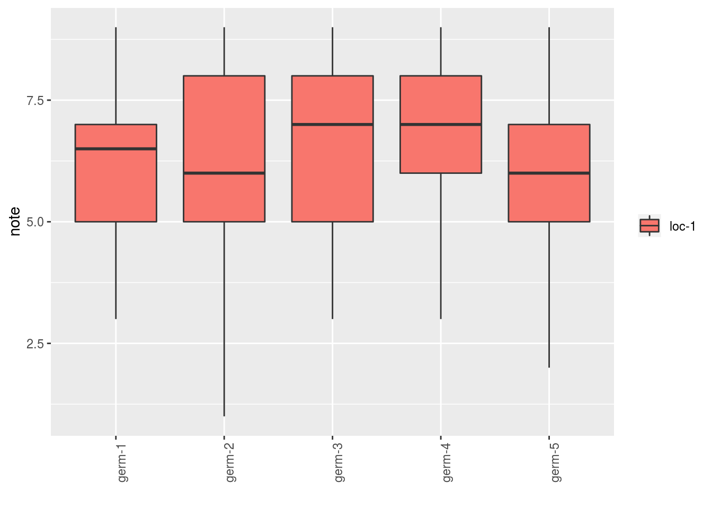
##
## $note$`germplasm-2|location-1`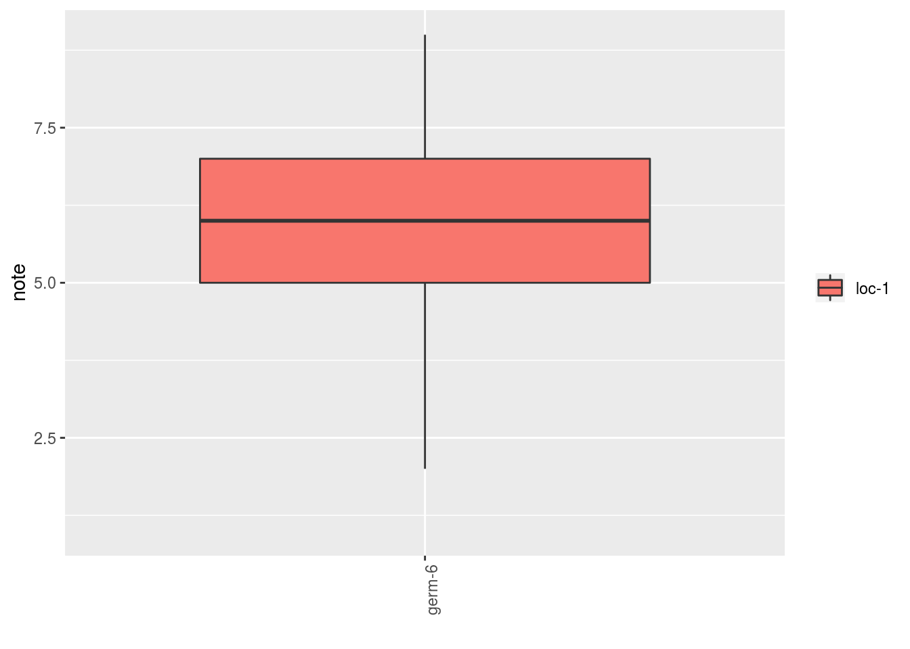
As well as the descriptors for each germplasm for example:
descriptors = data_hedonic$descriptors
p_des = plot(data_hedonic, plot_type = "radar", in_col = "germplasm",
vec_variables = descriptors
)
p_des## $`all-variables`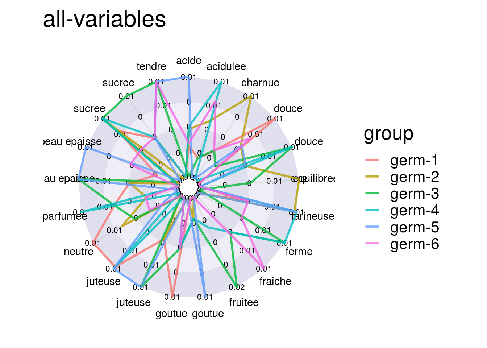
4.3.5 Run the model
To run the model on the dataset, used the function model_hedonic.
out_hedonic = model_hedonic(data_hedonic)## Warning in PCA(data_juges_hcpc, quanti.sup = id_quanti.sup, quali.sup =
## id_quali.sup, : Missing values are imputed by the mean of the variable: you
## should use the imputePCA function of the missMDA packageout_hedonic is a list with three elements:
model: the result of the anova run on note
out_hedonic$model##
## Call:
## stats::lm(formula = note ~ juges + germplasm, data = data_sample)
##
## Coefficients:
## (Intercept) juges2 juges4 juges5
## 6.31772 0.34588 -1.35400 -1.04203
## juges6 juges7 juges8 juges9
## -0.93390 -1.45714 -2.35549 0.39943
## juges10 juges11 juges12 juges13
## 0.75797 0.56610 -3.26724 0.39943
## juges14 juges15 juges16 juges17
## -1.19356 -1.35250 1.60000 0.39943
## juges19 juges20 juges23 juges24
## 1.20006 -1.20183 -4.60341 1.14451
## juges25 juges26 juges27 juges28
## 0.90629 -1.35400 -0.42967 -1.70036
## juges31 juges32 juges33 juges34
## -0.43390 -0.10400 2.27689 1.14451
## juges35 juges36 juges37 juges38
## 0.55797 -1.26724 -0.10057 -0.42057
## juges39 juges41 juges42 juges43
## -1.60341 0.52540 0.64750 1.46789
## juges44 juges45 juges46 juges47
## -0.66903 -1.19878 -1.20183 -0.46056
## juges49 juges50 juges51 juges52
## -0.60057 -0.52690 0.93973 -1.70183
## juges53 juges54 juges56 juges57
## 0.89520 -1.43390 2.11465 -1.58120
## juges58 juges59 juges62 juges63
## -2.39327 -1.76724 -0.97311 0.56610
## juges64 juges65 juges66 juges68
## 0.14451 1.11465 -1.74361 0.52689
## juges69 juges70 juges71 juges72
## 1.14451 -0.43390 -1.09371 0.65909
## juges73 juges74 germplasmgerm-2 germplasmgerm-3
## 0.56610 -1.13931 0.07555 0.56763
## germplasmgerm-4 germplasmgerm-5 germplasmgerm-6
## 0.98436 -0.21612 0.28569anova(out_hedonic$model)## Analysis of Variance Table
##
## Response: note
## Df Sum Sq Mean Sq F value Pr(>F)
## juges 61 325.98 5.3439 2.3286 1.071e-05 ***
## germplasm 5 32.83 6.5657 2.8610 0.01657 *
## Residuals 169 387.84 2.2949
## ---
## Signif. codes: 0 '***' 0.001 '**' 0.01 '*' 0.05 '.' 0.1 ' ' 1CA: the result of the correspondance analysis run on the data set with the supplementary variables withFactoMineR::CA
out_hedonic$CA## **Results of the Correspondence Analysis (CA)**
## The row variable has 6 categories; the column variable has 21 categories
## The chi square of independence between the two variables is equal to 0.3704251 (p-value = 1 ).
## *The results are available in the following objects:
##
## name description
## 1 "$eig" "eigenvalues"
## 2 "$col" "results for the columns"
## 3 "$col$coord" "coord. for the columns"
## 4 "$col$cos2" "cos2 for the columns"
## 5 "$col$contrib" "contributions of the columns"
## 6 "$row" "results for the rows"
## 7 "$row$coord" "coord. for the rows"
## 8 "$row$cos2" "cos2 for the rows"
## 9 "$row$contrib" "contributions of the rows"
## 10 "$quanti.sup$coord" "coord. for supplementary continuous var."
## 11 "$quanti.sup$cos2" "cos2 for supplementary continuous var."
## 12 "$quali.sup$coord" "coord. for supplementary categorical var."
## 13 "$quali.sup$cos2" "cos2 for supplementary categorical var."
## 14 "$call" "summary called parameters"
## 15 "$call$marge.col" "weights of the columns"
## 16 "$call$marge.row" "weights of the rows"HCPC: the result of the correspondane analysis run on the data set with the supplementary variables withFactoMineR::PCAfollow byFactoMineR::HCPC. It is a list of three elements:
out_hedonic$HCPC$res.pca## **Results for the Principal Component Analysis (PCA)**
## The analysis was performed on 63 individuals, described by 11 variables
## *The results are available in the following objects:
##
## name
## 1 "$eig"
## 2 "$var"
## 3 "$var$coord"
## 4 "$var$cor"
## 5 "$var$cos2"
## 6 "$var$contrib"
## 7 "$ind"
## 8 "$ind$coord"
## 9 "$ind$cos2"
## 10 "$ind$contrib"
## 11 "$quali.sup"
## 12 "$quali.sup$coord"
## 13 "$quali.sup$v.test"
## 14 "$call"
## 15 "$call$centre"
## 16 "$call$ecart.type"
## 17 "$call$row.w"
## 18 "$call$col.w"
## description
## 1 "eigenvalues"
## 2 "results for the variables"
## 3 "coord. for the variables"
## 4 "correlations variables - dimensions"
## 5 "cos2 for the variables"
## 6 "contributions of the variables"
## 7 "results for the individuals"
## 8 "coord. for the individuals"
## 9 "cos2 for the individuals"
## 10 "contributions of the individuals"
## 11 "results for the supplementary categorical variables"
## 12 "coord. for the supplementary categories"
## 13 "v-test of the supplementary categories"
## 14 "summary statistics"
## 15 "mean of the variables"
## 16 "standard error of the variables"
## 17 "weights for the individuals"
## 18 "weights for the variables"out_hedonic$HCPC$res.hcpc## **Results for the Hierarchical Clustering on Principal Components**
## name
## 1 "$data.clust"
## 2 "$desc.var"
## 3 "$desc.var$quanti.var"
## 4 "$desc.var$quanti"
## 5 "$desc.var$test.chi2"
## 6 "$desc.axes$category"
## 7 "$desc.axes"
## 8 "$desc.axes$quanti.var"
## 9 "$desc.axes$quanti"
## 10 "$desc.ind"
## 11 "$desc.ind$para"
## 12 "$desc.ind$dist"
## 13 "$call"
## 14 "$call$t"
## description
## 1 "dataset with the cluster of the individuals"
## 2 "description of the clusters by the variables"
## 3 "description of the cluster var. by the continuous var."
## 4 "description of the clusters by the continuous var."
## 5 "description of the cluster var. by the categorical var."
## 6 "description of the clusters by the categories."
## 7 "description of the clusters by the dimensions"
## 8 "description of the cluster var. by the axes"
## 9 "description of the clusters by the axes"
## 10 "description of the clusters by the individuals"
## 11 "parangons of each clusters"
## 12 "specific individuals"
## 13 "summary statistics"
## 14 "description of the tree"head(out_hedonic$HCPC$clust)## loc-1:germ-1 loc-1:germ-2 loc-1:germ-3 loc-1:germ-4 loc-1:germ-5
## 1 7.000 5.00 7.000000 8.000000 6.000000
## 2 7.000 8.00 6.769231 6.000000 5.692308
## 4 6.000 4.00 6.769231 6.871795 3.000000
## 5 6.000 6.05 5.000000 7.000000 6.000000
## 6 6.000 5.00 7.000000 6.000000 3.000000
## 7 6.125 5.00 7.000000 6.000000 2.000000
## loc-1:germ-6 Age Sexe Bio.Non.Bio Circuit Departement clust
## 1 6.128205 <NA> <NA> <NA> <NA> <NA> cluster 6
## 2 7.000000 30 F 1 11 cluster 5
## 4 7.000000 12 F 1 1 <NA> cluster 4
## 5 4.000000 <NA> <NA> cluster 3
## 6 7.000000 49 H 1 1 <NA> cluster 4
## 7 6.000000 37 F 1 2 11 cluster 44.3.6 Check and visualize model outputs
The tests to check the model are explained in section 3.1.2.1.2.
4.3.6.1 Check the model
out_check_hedonic = check_model(out_hedonic)out_check_hedonic is list with two elements:
hedonicwhich it the same objet asout_hedonicdata_ggplota list containing information for ggplot:data_ggplot_residualsa list containing :data_ggplot_normalitydata_ggplot_skewness_testdata_ggplot_kurtosis_testdata_ggplot_shapiro_testdata_ggplot_qqplot
data_ggplot_variability_repartition_piedata_ggplot_var_intra
4.3.6.2 Visualize outputs
Once the computation is done, you can visualize the results with plot()
p_out_check_hedonic = plot(out_check_hedonic)p_out_check_hedonic is a list with:
residualsof the ANOVA modelhistogram: histogram with the distribution of the residuals
p_out_check_hedonic$residuals$histogram
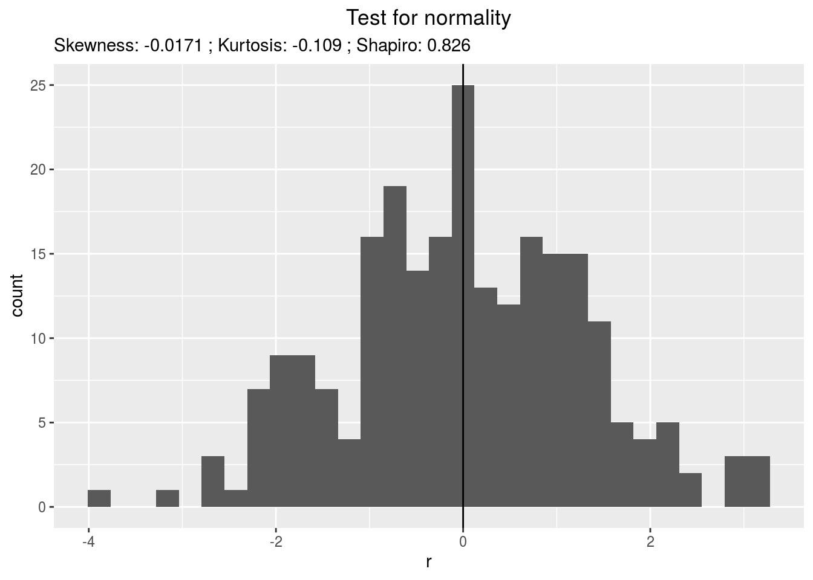## `stat_bin()` using `bins = 30`. Pick better value with `binwidth`.qqplot
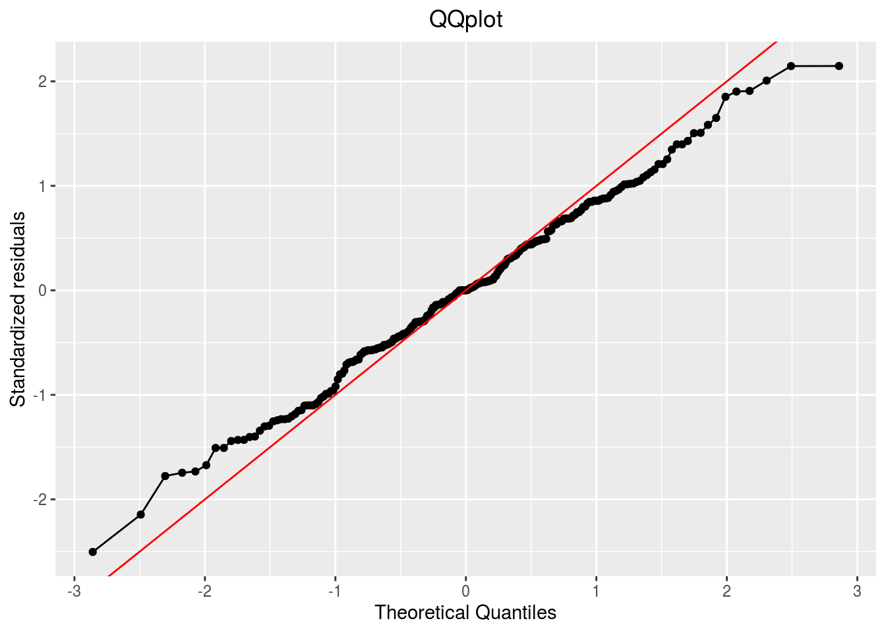p_out_check_hedonic$residuals$qqplotpoints
p_out_check_hedonic$residuals$points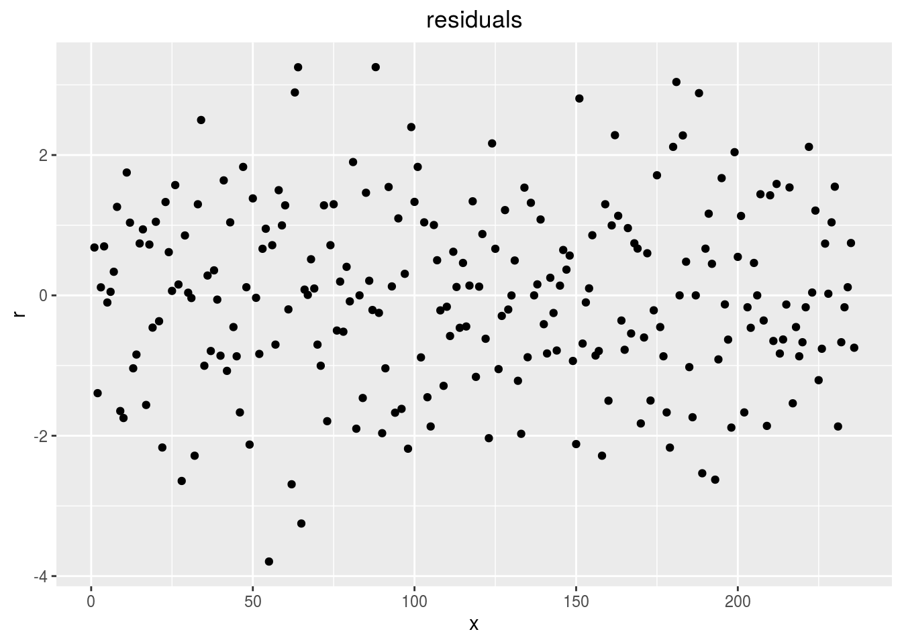
variability_repartition: pie with repartition of SumSq for each factor of the ANOVA model
p_out_check_hedonic$variability_repartition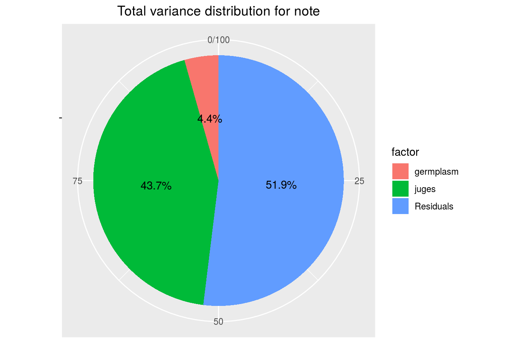
variance_intra_germplasm: repartition of the residuals for each germplasm which represent the person assessor variation plus the intra-germplasm variance of the ANOVA model.
p_out_check_hedonic$variance_intra_germplasm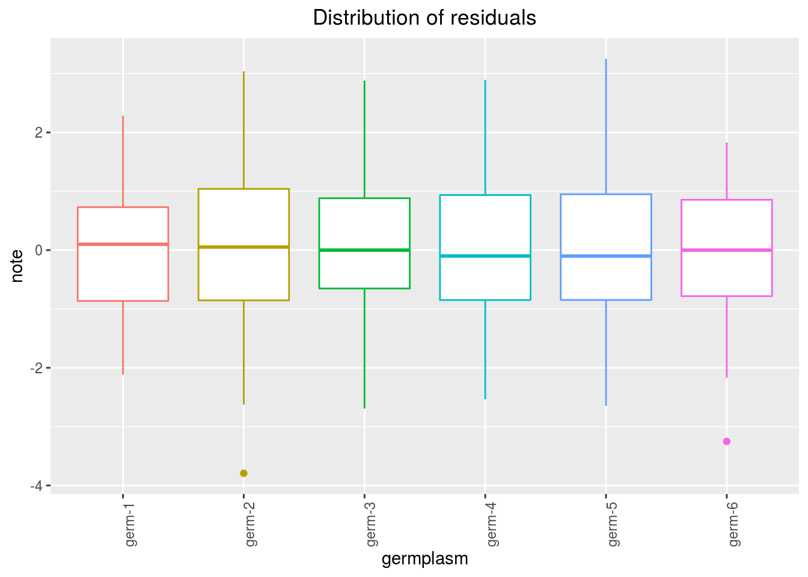
CA_composante_variance: variance caught by each dimension of the CA
p_out_check_hedonic$CA_composante_variance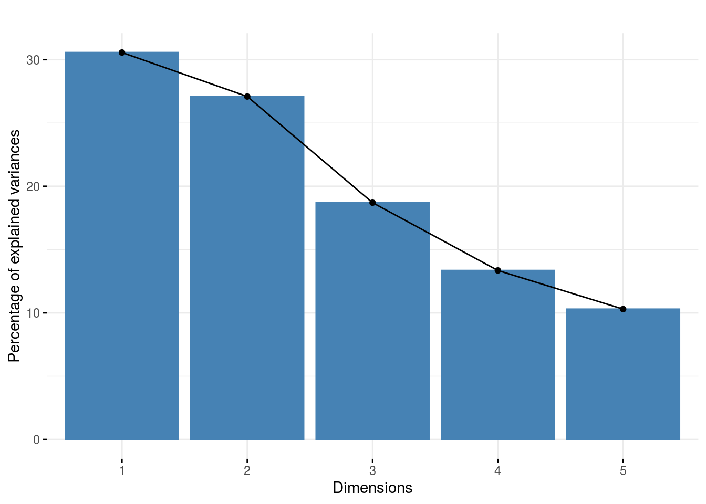
HCPC_composante_variance: variance caught by each dimension of the PCA previous to the HCPC
p_out_check_hedonic$PCA_composante_variance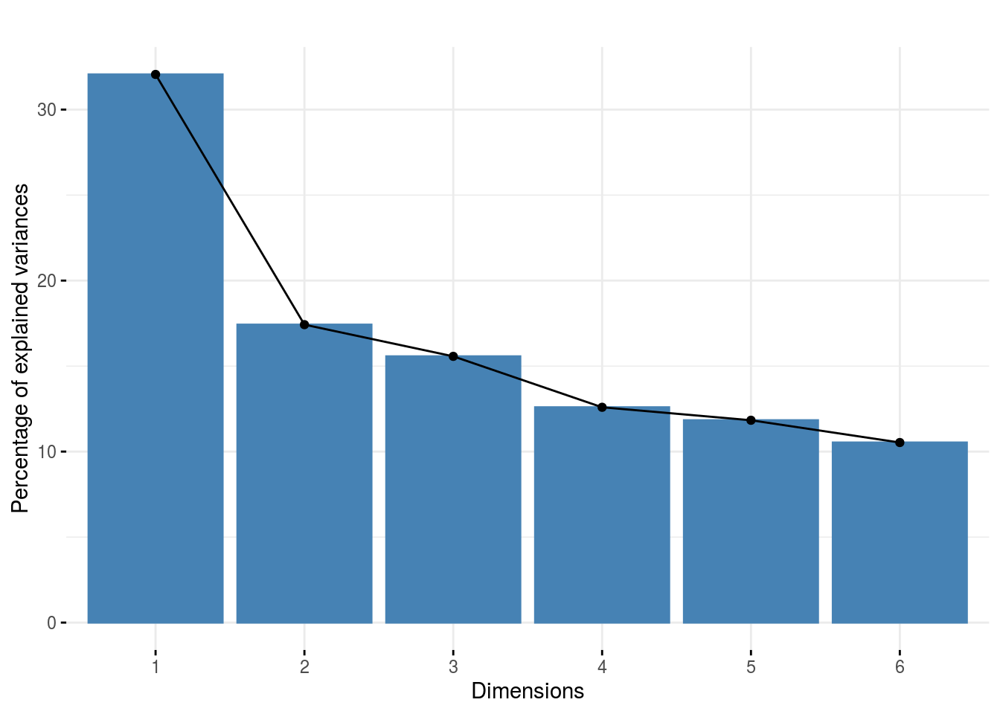
4.3.7 Get and visualize mean comparisons on note
The method to compute mean comparison are explained in section 3.1.2.1.3.
4.3.7.1 Get mean comparisons on note
Get mean comparisons with mean_comparisons().
out_mean_comparisons_hedonic = mean_comparisons(out_check_hedonic)out_mean_comparisons_hedonic is a list of one element for futher ggplot : data_ggplot_LSDbarplot_germplasm
4.3.7.2 Visualize mean comparisons on note
p_out_mean_comparisons_hedonic = plot(out_mean_comparisons_hedonic)p_out_mean_comparisons_hedonic is a list of on elements with barplots :
For each element of the list, there are as many graph as needed with nb_parameters_per_plot parameters per graph.
Letters are displayed on each bar.
Parameters that do not share the same letters are different regarding type I error (alpha) and alpha correction.
The error I (alpha) and the alpha correction are displayed in the title.
germplasm: mean comparison for germplasm
pg = p_out_mean_comparisons_hedonic$germplasm
names(pg)## [1] "1"pg$`1`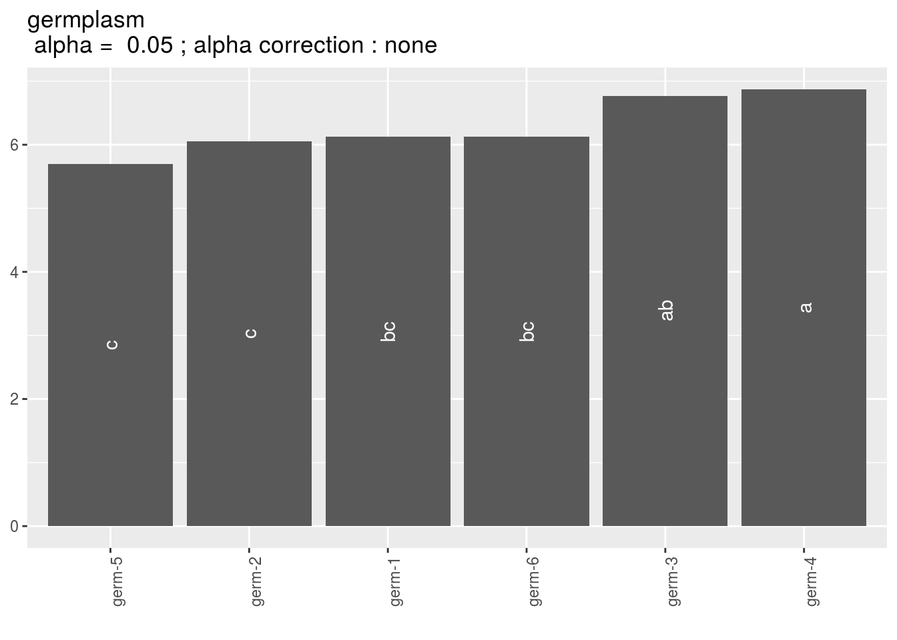
4.3.8 Get and visualize biplot regarding samples (CA) and juges (HCPC)
The biplot represents information about the percentages of total variation explained by the two axes. It has to be linked to the total variation caught by the interaction. If the total variation is small, then the biplot is useless. If the total variation is high enought, then the biplot is useful if the two first dimension represented catch enought variation (the more the better).
4.3.8.1 Get biplot
Get biplot regading samples (CA) and juges (HCPC)
out_biplot_hedonic = biplot_data(out_check_hedonic)4.3.8.2 Visualize biplot
p_out_biplot_hedonic = plot(out_biplot_hedonic)p_out_biplot_hedonic is a list of two elements with
- the
CAbiplot where descriptors are represented by a triangle in red and samples are represented by text in blue and point in color refering to the sample.
p_out_biplot_hedonic$ca_biplot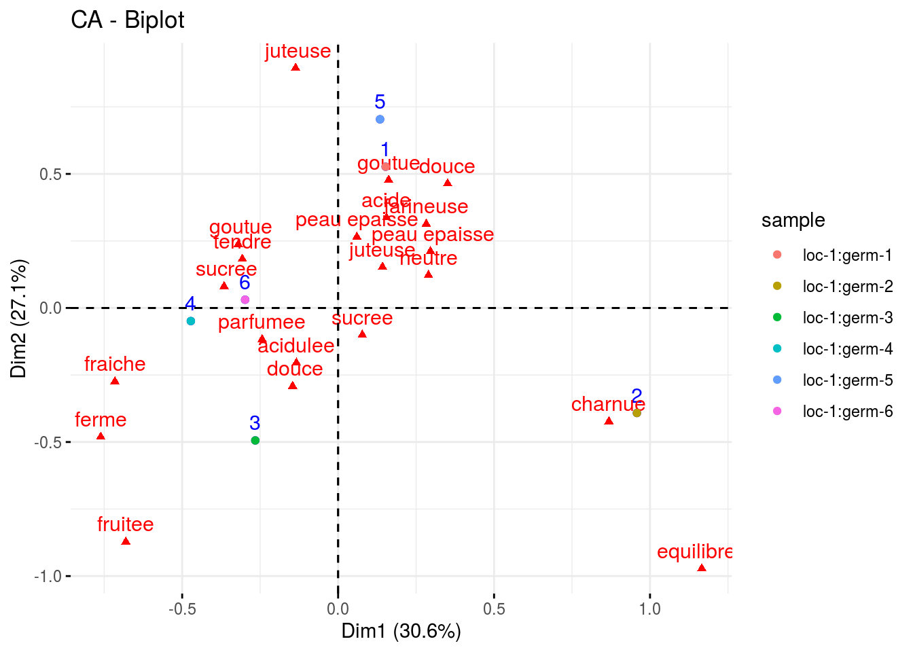
- the
HCPCbiplot is a list of two elements : one with the variable ans the additionnal variables and the other with the groups of juges detected by theHCPC.
p_out_biplot_hedonic$hcpc_biplot## $var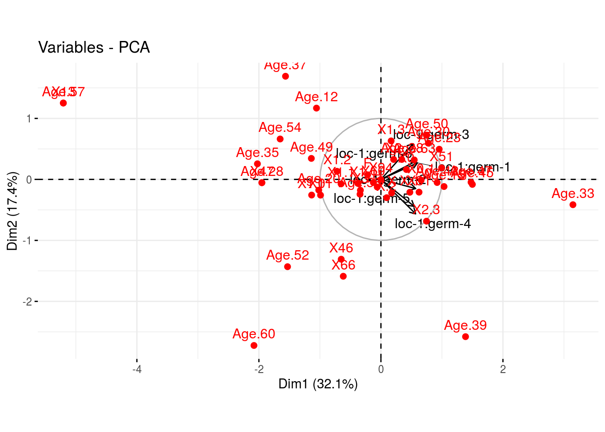
##
## $cluster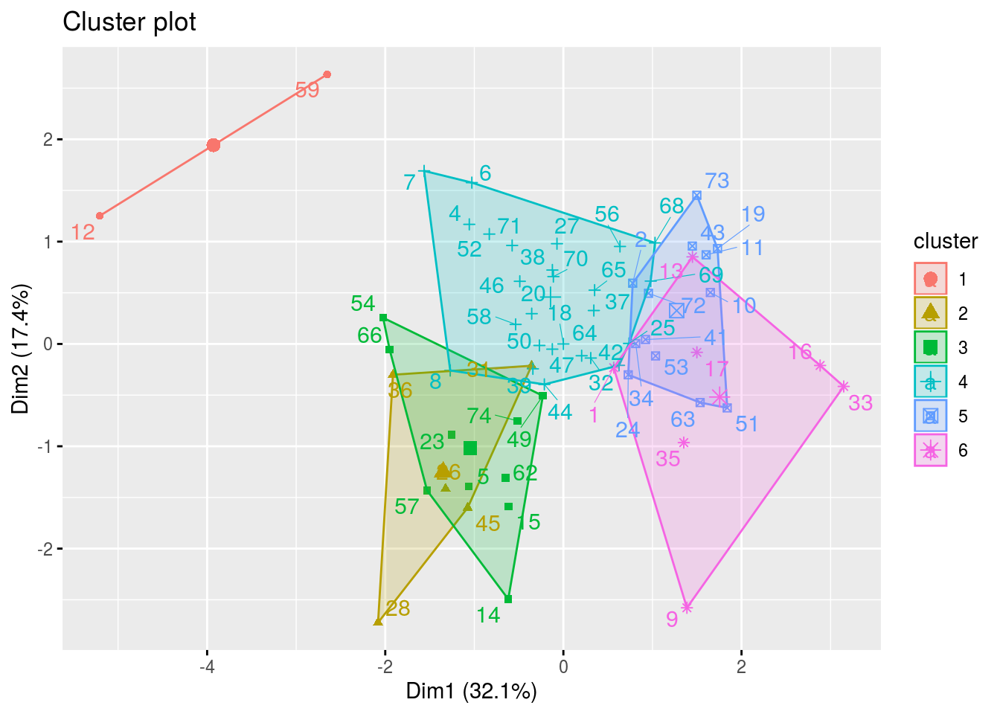